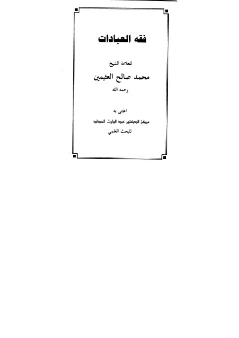

فقه العبادات- الحداد
Authors: محمد بن صالح العثيمين
Editors: عبد الوارث الحداد
Publishers: دار ابن عباس
Download Downloads need an internet connection.
- Published
- 1427هـ 2006م
- Country
- سمنود، مصر
- Edition
- 1
- Volumes
- 1
- Pages
- 368
- Type
- كتاب
- Category
- الفقه وأصوله
Description
▫️ العنوان: فقه العبادات- الحداد ▪️ المؤلف: #محمد_بن_صالح_العثيمين ▫️ المحقق: #عبد_الوارث_الحداد ▪️ الناشر: #دار_ابن_عباس ▫️ تاريخ النشر: 1427هـ 2006م ▪️ بلد النشر: سمنود، #مصر ▫️ الطبعة: 1 ▪️ عدد الأجزاء: 1 ▫️ الصفحات: 368 ▪️ نوع الوعاء: #كتاب ▫️ التصنيف الرئيسي: #الفقه_وأصوله ۪